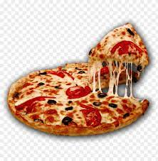
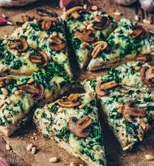
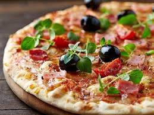
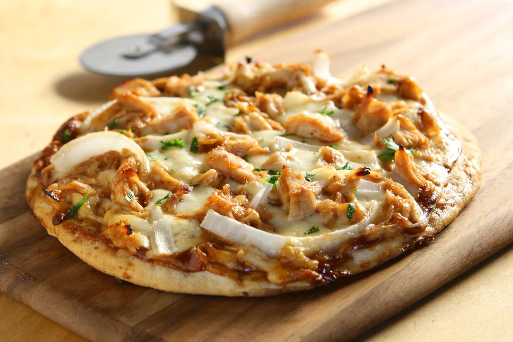
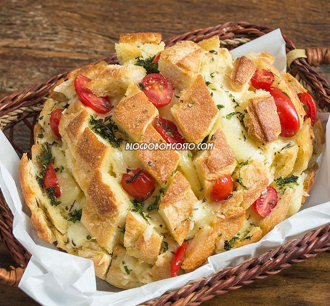
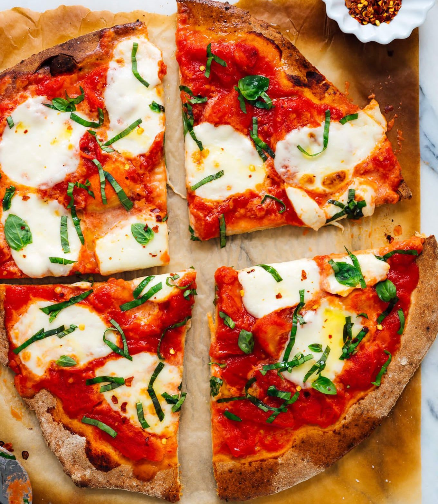
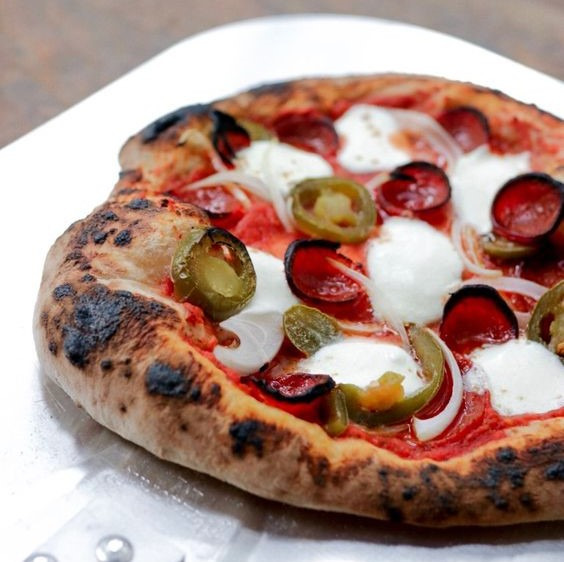
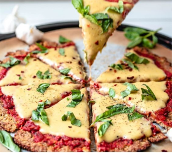

Schadd
Pizza
| •••  ••• | ||
|---|---|---|
Pizza Peperonnie  |
Prix Large : 1500 gds Medium : 1000 gds Petit : 500 gds |
Ingredients |
Pizza Vegetarienne  |
Prix Large : 2500 gds Medium : 1500 gds Petit : 800 gds |
Ingredients |
Schadd Pizza  |
Prix Large : 3000 gds Medium : 2000 gds Petit : 1500 gds |
Ingredients Pour 2 personnes |
Pizza au jambon  |
Prix Large : 1500 gds Medium : 1000 gds Petit : 500 gds |
Ingredients |
| Pizza Hawaiienne |
Prix Large : 2000 gds Medium : 1500 gds Petit : 1000 gds |
Ingredients |
Barbecue Chicken Pizza  |
Prix Large : 1500 gds Medium : 800 gds Petit : 500 gds |
Ingredients |
Pao Pizza  |
Prix Large : 1200 gds Medium : 900 gds Petit : 600 gds |
Ingredients |
Margherita Pizza  |
Prix Large : 1700 gds Medium : 800 gds Petit : 400 gds |
Ingredients |
Neopolitan Pizza  |
Prix Large : 2000 gds Medium : 1000 gds Petit : 900 gds |
Ingredients Temps de préparation : 40 min T. de Cuisson : 3 à 10 min(selon la puis. du four) Temps de repos : 16 h minimum(pate) Difficulté : moyen |
CauliFlower Pizza Crust  |
Prix Large : 2500 gds Medium : 2000 gds Petit : 1500 gds |
Ingredients |
 Rue Caisimir, Delmas 24, HAITI
Rue Caisimir, Delmas 24, HAITI